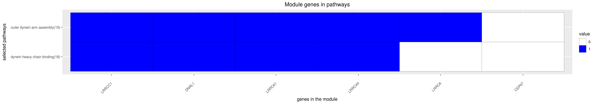

DREAM Module Identification Challenge – Consensus modules
PPI-STRING_Consensus_mod158
| Assigned name |
NA |
| Network |
PPI-STRING |
| Module ID |
PPI-STRING_Consensus_mod158 |
| Module size |
14 genes |
|
Module genes
This module comprises the following genes:
| Gene ID |
Gene Symbol |
Gene Name |
| 257177
|
C1orf192
|
cilia and flagella associated protein 126
|
| 79598
|
CEP97
|
centrosomal protein 97
|
| 1770
|
DNAL1
|
dynein axonemal heavy chain 9
|
| 254050
|
LRRC43
|
leucine rich repeat containing 43
|
| 90506
|
LRRC46
|
leucine rich repeat containing 46
|
| 83450
|
LRRC48
|
dynein regulatory complex subunit 3
|
| 54839
|
LRRC49
|
leucine rich repeat containing 49
|
| 115399
|
LRRC56
|
leucine rich repeat containing 56
|
| 23639
|
LRRC6
|
leucine rich repeat containing 6
|
| 65999
|
LRRC61
|
leucine rich repeat containing 61
|
| 341883
|
LRRC9
|
leucine rich repeat containing 9
|
| 85444
|
LRRCC1
|
leucine rich repeat and coiled-coil centrosomal protein 1
|
| 84125
|
LRRIQ1
|
leucine rich repeats and IQ motif containing 1
|
| 127255
|
LRRIQ3
|
leucine rich repeats and IQ motif containing 3
|
|
Functional annotation
Modules were tested for enrichment in functional and pathway annotations using two complementary approaches:
1. To select a small number of specific / non-redundant annotations for each module, a regression-based approach was used;
2. To obtain the complete set of enriched annotations, an extension of Fisher’s exact test that takes annotation bias into account was employed (Wallenius’ non-central hypergeometric distribution).
Most specific annotations for this module
1Regression coefficient
2Fisher’s exact test nominal P-value
3Annotation source (Reactome, GO biological process (BP), molecular function (MF) and cellular component (CC))
4GO category or Reactome pathway
5High-level branch of annotation tree
Gene membership

All enriched annotations
Gene Ontology
11Nominal enrichment p-value (Wallenius’ noncentral hypergeometric distribution)
2FDR corrected p-value (Benjamini-Hochberg)
Generated on: Thu Aug 23 09:52:13 2018 - R2HTML